Data Visualization with Base R
Data visualization can be defined as the use of graphical or pictorial representations to present data in a way that makes it easier to understand, analyze, and communicate. It involves the use of visual elements such as charts, graphs, and maps to help users better understand and interpret complex data sets. Data visualization is an important tool for exploratory data analysis, as well as for communicating results to others. By presenting data in a visual format, data visualization can also help to reveal new connections and insights that might not be apparent from a purely numerical or textual analysis. Effective data visualization allows viewers to quickly identify patterns, trends, and relationships within the data, and can be used to highlight key insights or communicate complex ideas. In this project, I will explain the details that need to be considered when plotting with base R graphics.
In base R, there are many functions that can be used to create different types of plots. Although there is no clear distinction between high-level and low-level functions, I like to divide functions as such. I believe that there are some functions which can be called as high-level plotting functions tend to provide a convenient way to create a specific type of plot with a relatively small amount of code. On the other hand, there are some functions which can be called as low-level plotting functions provide more control and flexibility, but require more coding to create a plot. At this point, it needs to be noted that the package ggplot2, which will be explained later in another project, is built around the concept of “grammar of graphics”, which means that it provides a set of rules for building plots by combining basic building blocks or components. It is possible to think low-level functions as components in the ggplot2 package.
There are five high-level plotting functions in the base R. There functions can be listed as follows:
-
barplot()
-
pie()
-
hist()
-
boxplot()
-
plot()
There are seven low-level plotting functions in the base R. There functions can be listed as follows:
-
text()
-
points()
-
lines()
-
legend()
-
abline()
-
arrows()
-
symbols()
I think there is one thing that should be mentioned at this point. High-level plotting functions can create a plot by themselves, while low-level plotting functions must have a high-level function in order to work. While showing each high-level function, I tried to explain the working logic of these two types of functions by adding one or more low-level functions.
Barplot
Barplot is used to create bar charts, which are a type of graph that displays categorical data as rectangular bars with heights or lengths proportional to the values they represent. By looking at the relative heights or lengths of the bars, it might be possible to quickly compare the values and identify any trends or patterns.
The barplot() function in base R has several arguments that can be used to customize the appearance and behavior of the resulting bar chart. Here are some of the most commonly used arguments of the barplot() function:
-
height - a vector or matrix of values that represent the heights of the bars. This argument is required.
-
names.arg - a vector of names or labels for the bars. The length of this vector should be equal to the length of the height vector.
-
col - a vector of colors for the bars. The length of this vector should be equal to the length of the height vector.
-
border - the color of the borders of the bars. The default value is “black”.
-
main - a main title for the plot.
-
xlab - a label for the x-axis.
-
ylab - a label for the y-axis.
-
legend.text - a vector of labels for the legend.
-
args.legend - a list of arguments to control the appearance of the legend.
-
width - the width of the bars. The default value is 0.5.
-
space - the amount of space between the bars. The default value is 1.
-
horiz - a logical value that controls the orientation of the bars. If TRUE, the bars are horizontal; if FALSE, they are vertical. The default value is FALSE.
-
density - the density of shading lines in the bars. The default value is 1.
-
angle - the angle of shading lines in the bars. The default value is 45.
Lets create a vector for barplot examples:
set.seed(111) x1 <- sample(LETTERS[1:5], size = 20, rep= T) let <- table(x1) Basic barplot with required arguments look like the following:
barplot(let) 
Here how it looks like if I add some of the arguments:
barplot(let, main = "Title of the plot", xlab = "X axis", ylab = "Y axis", horiz = T, col = c("red", "blue", "gray1", "navy", "gold"), # assigns colors by order xlim = c(0,7), # limit values of the x axis legend.text = c("Group 1", "Group 2", "Group 3", "Group 4", "Group 5")) # adds legends by order 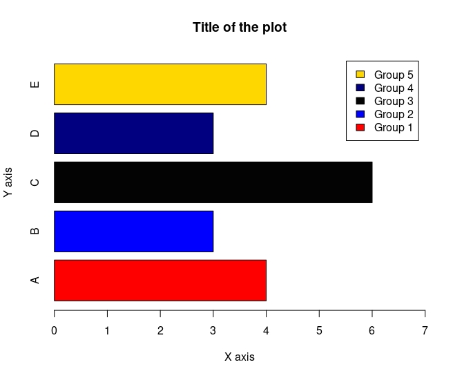
There are some advantages and disadvantages of barplots which can be listed as follows:
Advantages:
-
Bar plots are an effective way to represent categorical data as they allow easy visualization of the data.
-
Bar plots are intuitive and easy to understand, even for individuals who are not familiar with the data.
-
They allow for easy comparison of data across different categories or groups.
-
Bar plots can be used to display many different types of data, including frequency distributions, percentages, and counts.
-
They can be customized by changing the colors, labels, and orientation of the bars to make them more visually appealing.
Disadvantages:
-
Bar plots are only useful for categorical data and may not be appropriate for continuous data.
-
If there are too many categories, the plot may become too cluttered to read easily.
-
If the scale of the y-axis is not appropriate, the bars can be misleading and give the impression that the differences between the data points are greater or smaller than they actually are.
-
If the bars are too wide or too close together, differences between the data points may be obscured, making it difficult to accurately compare the data.
-
Bar plots may not be the best choice for displaying complex data, and other visualization methods may be more appropriate.
Stacked Barplot
A stacked bar plot is a type of bar chart that displays multiple variables by stacking them on top of each other. Each bar in the chart represents a category, and the height or length of the bar represents the total value of the variables being stacked. The stacked bar plot breaks down the total value of each category into different segments, with each segment representing a different variable. Here how stacked barplot looks like:
barplot(let2, xlab = "X axis", ylab = "Y axis", col = c("red", "blue", "gray1", "navy", "gold"), legend.text = rownames(let2), xlim = c(0,3)) 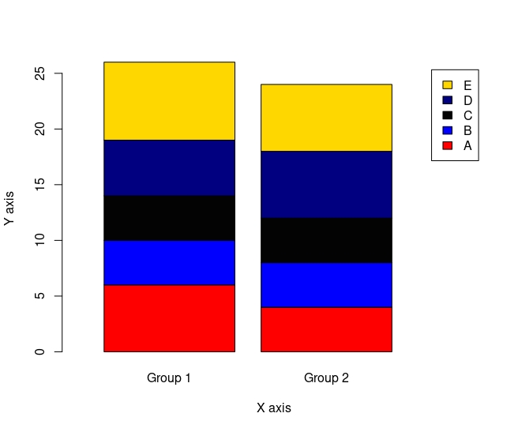
Clustered Barplot
A clustered barplot,also known as a grouped barplot, is a type of bar chart that displays multiple variables for each category by grouping them together. In a clustered barplot, each category has multiple bars, one for each variable being displayed, and the bars for each variable are grouped together side by side. Here how clustered barplot looks like:
barplot(let2, xlab = "X axis", ylab = "Y axis", col = c("red", "blue", "gray1", "navy", "gold"), legend.text = rownames(let2), xlim = c(0,14), beside = T # for clustered barplot ) 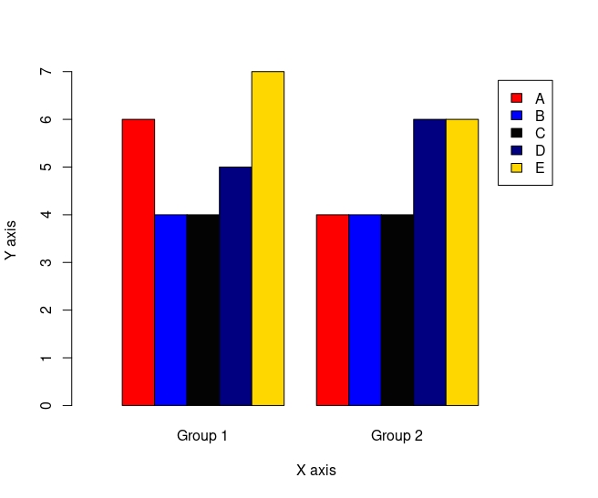
barplot() with a low-level function text()
For this example, I will use quakes dataset fromdatasets package in R. At first, I will set the bin widths with seq function. Then, I will choose the limits to cut values with cut function. Lastly, I will use table function to prepare it for the barplot() function and it will look like the follows in a basic form:
b <- seq(4,6.5, by=0.5) # setting bin widths
c <- cut(quakes$mag, breaks = b, right = F) # where to cut the values
t <- table(c)
# this is how it looks like in a basic form
barplot(t)
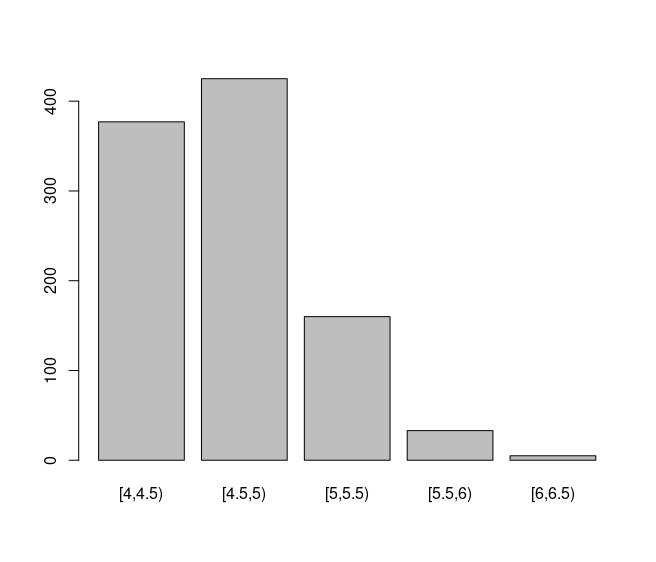
Lets rock this!
barplot(t, main = "earthquake counts by magnitude", xlab = "madnitude",
ylab = "Frequency",
col = "chocolate",
border = "khaki1",
ylim = c(0,500))
text(0.7, 400,t[1])
text(1.85,450,t[2])
text(3.15,185,t[3])
text(4.25,55,t[4])
text(5.5,30,t[5])
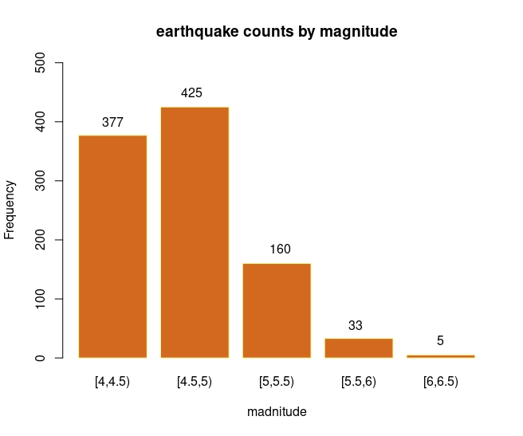
Pie Chart
A pie chart is a type of circular graph that is commonly used to
represent data as a set of slices, where each slice corresponds to a
category and its area or angle represents the proportion of that
category relative to the whole. The total area or angle of the pie
represents the total value of the data being displayed. The pie()
function in R is used to create a pie chart.
Here are some of the most commonly used arguments of pie() function:
-
x: A vector of non-negative numeric values that specifies the data to be represented in the pie chart.
-
labels: A character vector of labels to be used for each slice of the pie chart.
-
main: A title for the pie chart.
-
col: A vector of colors to be used for each slice of the pie chart.
-
border: A color to be used for the border of each slice of the pie chart.
-
lty: The line type to be used for the border of each slice of the pie chart.
-
init.angle: The starting angle in degrees for the first slice of the pie chart.
-
clockwise: A logical value that specifies whether the slices of the pie chart should be drawn clockwise or counterclockwise.
-
density: A value that specifies the density of shading lines for each slice of the pie chart.
-
angle: A vector of angles in degrees to be used for shading each slice of the pie chart.
I will again create a vector to draw a pie chart. You can follow the codes below:
set.seed(111)
x1 <- sample(LETTERS[1:5], size = 20, rep = T)
let <- table(x1)
r1 <- (let/length(x1))
l1 <- paste("Group-", names(let) , sep= " " , r1*100, "%")
# basic pie() looks like the following:
pie(let, labels = l1,
main = "Title",
col = c("red", "blue", "gray2", "navy", "gold")
)
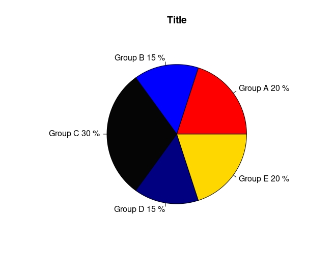
Pie charts have several advantages and disadvantages. Some of these include:
Advantages:
-
Pie charts are easy to understand and interpret, making them a popular choice for displaying data.
-
They allow for easy comparison of proportions or percentages across different categories. Pie charts have an attractive design that can make data more appealing and engaging.
-
Pie charts are efficient in terms of space and can display a large amount of data in a small area.
-
They are best used to display one set of data where the categories do not have any overlapping.
Disadvantages:
-
Pie charts can be difficult to compare accurately, particularly if the slices are small or if there are many categories.
-
They can be misleading if the slices are not drawn to scale or if the angles are not accurate.
-
Pie charts may not be the best choice for displaying complex data, and other visualization methods may be more appropriate.
-
Pie charts are not ideal for displaying large amounts of data or data with many categories.
-
They are limited to displaying proportions and do not show absolute values or counts.
Histogram
A histogram is a graphical representation of the distribution of a
dataset. It is a type of bar plot that represents the frequency or count
of values that fall within a set of intervals or “bins”. The x-axis
represents the intervals or bins of values, while the y-axis represents
the frequency or count of values that fall within each interval. Bin
width is an important detail that has been widely studied in the
literature and is still debated. This is because deciding the number and
width of the bins in a histogram can have a significant impact on the
resulting visualization. Lets look at the significance of the bins with
basic histograms. I will use mpg variable from the mtcars dataset.
Here how histogram looks like with default bin width which is Sturges'
formula.
mpg <- mtcars$mpgr
hist(mpg)
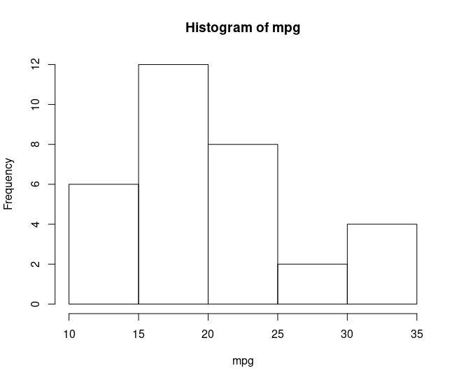
If I change breaks as follows, it will look like:
hist(mpg, breaks = 2)
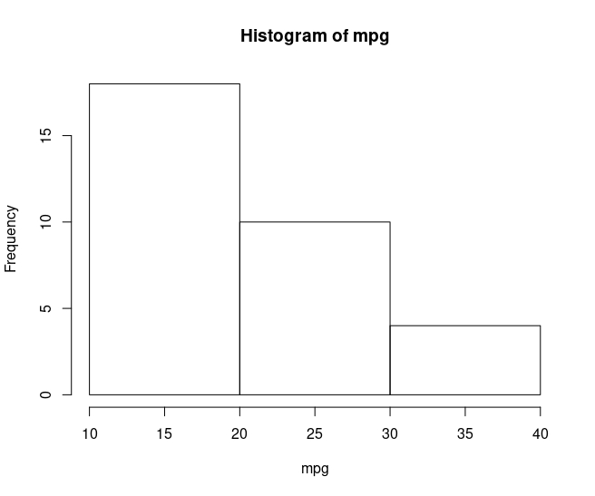
Assuming that I wanted to analyse this histogram to have an idea about
the distribution of the mpg variable, I would have different ideas about
the distribution of the mpg variable for both graphs. For this reason,
there are several methods for determining the appropriate number of
bins, rules can be applied to hist function are:
-
Sturges' formula: This method uses the following formula to determine the number of bins: k = 1 + log2(n), where k is the number of bins and n is the number of data points.
-
Freedman-Diaconis rule: This method uses the interquartile range (IQR) to determine the width of each bin. The formula for the bin width is: bin width = 2 * IQR / (n^(1/3)), where n is the number of data points.
-
Scott’s rule: This method uses the standard deviation of the data to determine the width of each bin. The formula for the bin width is: bin width = 3.5 * sd / (n^(1/3)), where sd is the standard deviation of the data and n is the number of data points.
Here are some of the most commonly used arguments of hist()function:
-
x: A vector of numeric values that specifies the data to be represented in the histogram.
-
breaks: A specification of the breakpoints (i.e., the edges of the bins) to use in the histogram. This can be a numeric vector, or a function such as breaks = “FD” to use the Freedman-Diaconis rule for determining the bin widths.
-
freq: A logical value that specifies whether the y-axis should represent the frequency (i.e., the count of values in each bin) or the density (i.e., the proportion of values in each bin).
-
col: The color to use for the bars of the histogram.# border: The color to use for the borders of the bars of the histogram.
-
lwd: The line width to use for the borders of the bars of the histogram.
-
density: A value between 0 and 1 specifying the density of shading lines for the bars of the histogram.
-
angle: The angle in degrees of the shading lines for the bars of the histogram.
-
add: A logical value that specifies whether the histogram should be added to an existing plot.
-
axes: A logical value that specifies whether the axes should be drawn for the histogram.
-
plot: A logical value that specifies whether the histogram should be plotted.
-
labels: A logical value that specifies whether labels should be added to the bars of the histogram.
Here how histogram looks like if I add some of the arguments:
hist(mpg,
breaks = "FD", # for Freedman-Diaconis rule
freq = F,
ylim = c(0,0.08),
col = "burlywood4",
border = "burlywood2",
axes = F, labels = T)
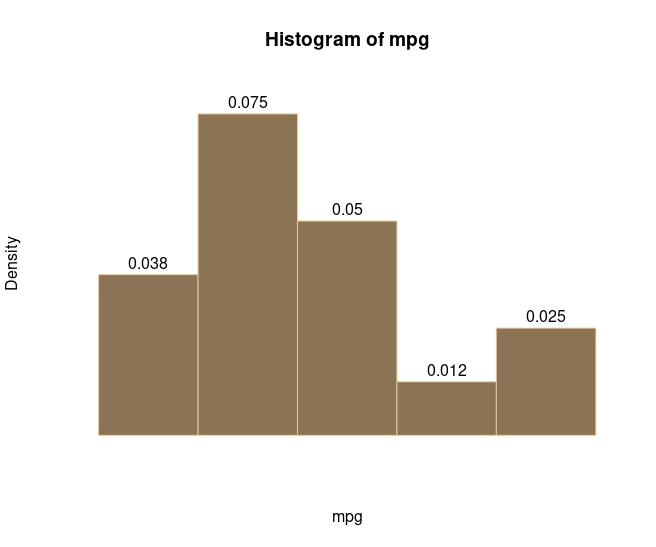
hist() with a low-level function lines()
With the low-level function lines() it is possible to draw a density line in the histogram, which can give better information about the distribution of the data.
Lets simulate a data for this example:
set.seed(1212)
x <- rnorm(1000, 10, 4)
x <- sort(x, decreasing = F)
fun <- dnorm(x, mean = mean(x), sd = sd(x)) # calculating density
hist(x, main = "histogram of x", ylab = "Density", xlab = "x",col="grey",
border="black", probability = T, ylim = c(0, max(fun))) # drawing histogram with high-level function hist()
lines(x,fun, col = 1, lwd = 2) # adding density line with low-level function lines()
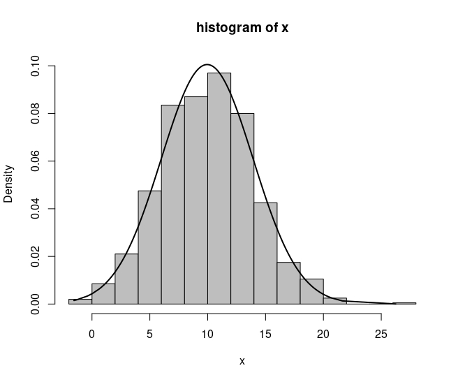
Histograms have several advantages and disadvantages. Some of these include:
Advantages:
-
Histograms are a useful tool for visualizing the distribution of a dataset. They provide a quick and easy way to see the range, shape, and central tendency of the data.
-
Histograms are flexible and can be used to visualize a wide range of data types, including continuous, discrete, and categorical data.
-
Histograms can be used to identify outliers and unusual observations that may be skewing the distribution of the data.
-
Histograms can be easily created in R and other statistical software packages, and can be customized with a variety of options, such as bin width, color, and labels.
Disadvantages:
-
The shape and appearance of a histogram can be sensitive to the choice of bin width. Different bin widths can result in different visualizations of the same data, which can make it difficult to compare histograms.
-
Histograms can be sensitive to the choice of the number of bins. Too few bins can result in a loss of information about the distribution, while too many bins can create a noisy and difficult-to-interpret histogram.
-
Histograms can be misleading if the data are not properly preprocessed or if the data are not representative of the underlying population.
-
Histograms can be difficult to interpret for large datasets, or when there is a high degree of variation in the data.
Boxplot
A boxplot is a graphical representation of the distribution of a dataset. It is a standardized way of displaying the distribution of data based on five summary statistics: the minimum value, the first quartile (Q1), the median, the third quartile (Q3), and the maximum value.
Here are some of the most commonly used arguments of the
boxplot()function:
-
formula: a formula describing the variable(s) to be plotted.
-
data: the data frame containing the variables to be plotted.
-
subset: an optional vector specifying a subset of the data to be plotted.
-
na.action: a function to handle missing data.
-
names: a character vector giving the names of the variables to be plotted.
-
horizontal: a logical value indicating whether to plot the boxes horizontally or vertically.
-
notch: a logical value indicating whether to draw a notch around the median of each box.
-
varwidth: a logical value indicating whether the boxes should be drawn with widths proportional to the square root of the number of observations in each group.
-
outline: a logical value indicating whether to draw individual points outside of the whiskers.
-
col: the color of the boxes, whiskers, and outliers.
-
border: the color of the border around the boxes.
-
boxwex: the width of the boxes.
-
at: a numeric vector giving the locations of the boxes along the x-axis.
-
add: a logical value indicating whether to add the boxplot to an existing plot.
Here how basic boxplot looks like:
boxplot(mpg)
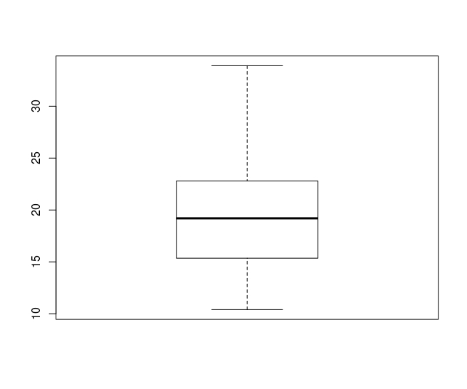
Here how it looks like if I add some of the arguments to the function:
boxplot(mpg, col = "chocolate",
border = "khaki4",
notch = T,
horizontal = T,
varwidth = T)
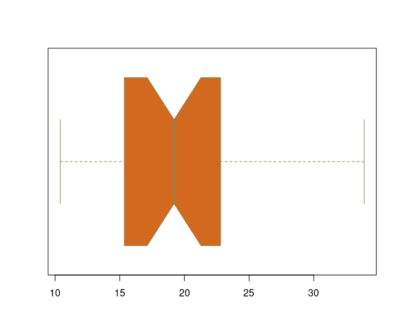
boxplot() with a low-level function text() & abline()
I will use iris dataset for this example. I will draw a line at the
mean of Sepal Width using abline function. After, I will add$/xbar$ to
the line.
boxplot(iris$Sepal.Width~iris$Species, # group by species
main = "Sepal widths by species",
col = c("red", "blue", "gold"),
horizontal = T)
abline(v = mean(iris$Sepal.Width), lty = 2) # adding horizontal line at the mean of sepal.width
text(3.1, 0.5, expression(bar(x))) # adding /xbar
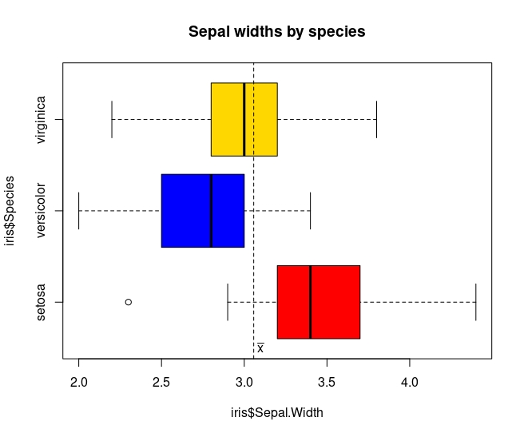
Scatterplot
In base R, it is possible to draw both line and scatterplot with the plot() function. A scatter plot is a type of graph that displays the relationship between two continuous variables. Each point on the plot represents a single observation, with the x-axis representing the values of one variable and the y-axis representing the values of the other variable. A line plot is a graph that displays data points connected by straight lines. The x-axis represents the independent variable, and the y-axis represents the dependent variable.
Here is a basic scatterplot with plot() function:
plot(mtcars$mpg, mtcars$hp)
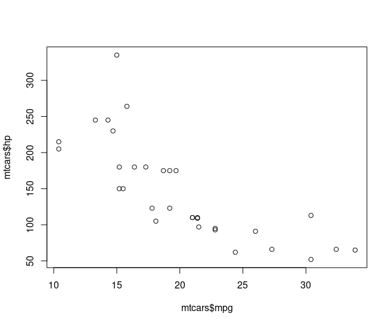
Scatter plots have several advantages and disadvantages. Some of these include:
Advantages:
-
Provide a visual representation of the relationship between two variables.
-
Show the presence or absence of a relationship between the two variables.
-
Help in identifying outliers, trends, and patterns.
-
Provide information about the direction and strength of the relationship between the variables.
Disadvantages:
-
Can only show the relationship between two variables.
-
May be difficult to interpret when there are a large number of observations.
-
May not always show the true nature of the relationship between the variables.
-
Correlation does not imply causation, and it is important to be cautious when interpreting the relationship shown in a scatter plot.
Line Plot
A line plot is a graph that displays data points connected by straight lines. # The x-axis represents the independent variable, and the y-axis represents the dependent variable. Here is a basic line plot with plot() function:
plot(mpg, type = "l")
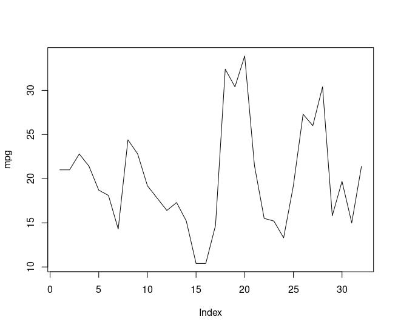
Line plots have several advantages and disadvantages. Some of these include:
Advantages:
-
Can show trends in data over time and provide insight into how the data changes.
-
Can also reveal patterns or fluctuations in the data that may not be immediately apparent from a table of numbers.
-
Easy to create and read, making them an effective way to communicate data to a wide audience.
-
Can be used to compare multiple sets of data on the same graph, allowing for easy visual comparison.
Disadvantages:
-
May not be appropriate for data that does not change over time.
-
May not be useful for showing data with a large number of categories or data points.
-
Can be misleading if the data is not plotted accurately or if the scale of the graph is not appropriate.
-
May not be useful for identifying outliers or extreme values in the data.
The arguments for the plot()function can vary depending on the type of
graph being created. Here are some common arguments for the the
function:
-
x and y: the data to be plotted on the x-axis and y-axis, respectively.
-
type: the type of plot to be created. For example, “p” creates a scatter plot with points, “l” creates a line plot, “b” creates both points and lines, and “h” creates a histogram.
-
main: the main title of the plot.
-
xlab and ylab: the labels for the x-axis and y-axis, respectively.
-
xlim and ylim: limits for the x-axis and y-axis, respectively.
-
col: the color to be used for the points or lines
-
pch: type of symbol to be used for the points
-
lty: Type of line
-
bty: type of box
Here how scatterplot looks like when I use these arguments:
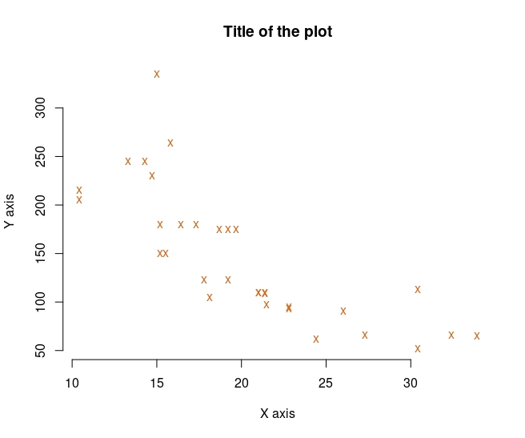
Here how lineplot looks like when I use these arguments:
plot(mpg,
type = "l",
main = "Title of the plot",
xlab = "X axis",
ylab = "Y axis",
col = "chocolate",
lty = "dashed",
bty = "L"
)
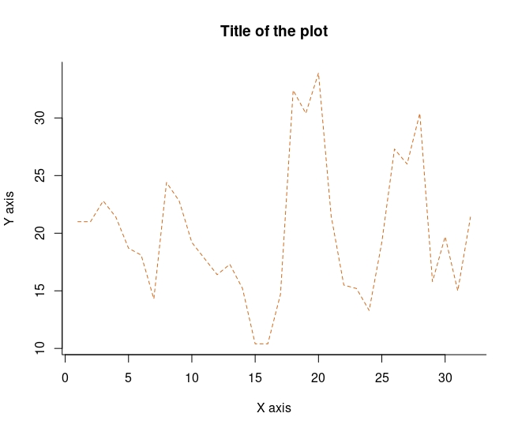
plot() with low-level function points()
For this example, I will draw a partial function graph.
x1 <- seq(-2,-1.01, len = 100)
y1 <- x1^2
x2 <- seq(-1,1, len = 100)
y2 <- rep(1, 100)
x3 <- seq(1.01, 2, len = 100)
y3 <- 2* x3 -1
plot(x1,y1, xlim = c(-2,2), ylim = c(0,5), type = "l", lwd = 3, col = "tomato2", bty = "L", xlab = "", ylab = "", main = "plot() & points()")
points(x2,y2,type = "l", lwd = 3, col = "chocolate4")
points(x3,y3,type = "l", lwd = 3, col = "lightsalmon")
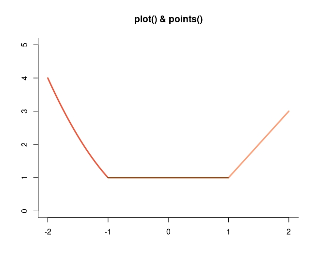
plot() with a low-level function lines() and legend()
For this example, I will simulate chisquare distributed vectors with different degrees of freedom.
x <- seq(0,60, len=1000)
df <- c(5,10,20,30) # setting degrees of freedom
color <- c("red","blue", "green", "orange2") # setting line colors
title <- paste("Chi-Square, df=", df, sep = "" ) # setting titles
line_type <- c(2,1,1,1) # setting line types
line_width <- c(1,1,1,1) # setting line widths
plot(x,xlim=c(0,60), ylim = c(0,0.15), main = "Different Chi-Square Distributions", ylab="Density", type = "n") # drawing empty plot
for (i in 1:length(df) ) { # for loop to draw line for each df
x <- seq(0,60, len=1000)
fx <- dchisq(x, df = df[i])
lines(x, fx, main = title[i], xlab = "x", ylab ="Density", col=color[i], lwd = line_width[i], lty = line_width[i])
}
legend("topright", legend = title, col=color, lty = line_type) # legend to distinguish lines
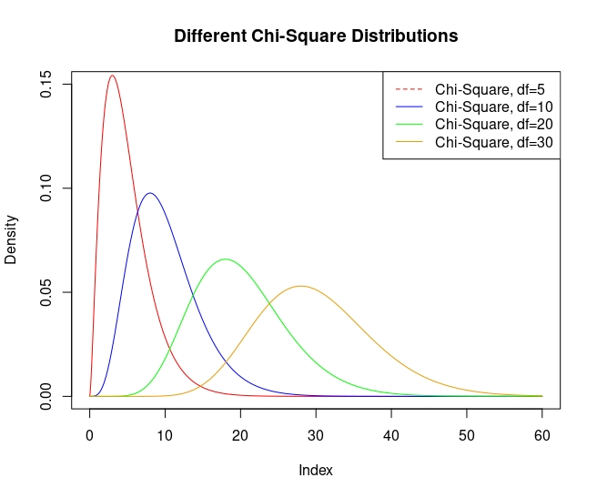
par Function
The par() function is a built-in function in R that is used to set or retrieve graphical parameters. These parameters control the appearance of the graphics such as the size of the plotting region, the margins, the axes, the color, and more. Here are some of the most common arguments for the par() function:
-
mfrow and mfcol: specify the number of rows and columns of plots to be created on a page. mfrow creates plots in a matrix format, filling rows first, while mfcol fills columns first.
-
mar: the margins of the plotting region in the form c(bottom, left, top, right)
-
oma: outer margins of the plotting region, i.e., the space between the edge of the plotting region and the main title, axis labels, and so on, in the form c(bottom, left, top, right).
-
pty: the type of plot region to be used, either “s” (square) or “m” (maximal).
-
xaxs and yaxs: the style of the axis ranges. A value of “r” (default) indicates that the axis limits should be rounded to the nearest integer multiple of the tick interval, while a value of “i” indicates that the axis limits should be exactly at the data range limits.
-
col: the color palette to be used for subsequent plots.
-
lty: the default line type to be used for subsequent plots.
-
lwd: the default line width to be used for subsequent plots.
-
bg: background of the plot
-
cex: the size of the text used for plot symbols and axis labels.
-
pch: the plotting character to be used for plot symbols.
-
las: the orientation of axis labels. A value of 0 indicates horizontal labels, while 1, 2, and 3 indicate labels perpendicular to the axis.
-
log: whether the x- and/or y-axis should be plotted on a logarithmic scale. A value of “x” indicates a logarithmic x-axis, while “y” indicates a logarithmic y-axis, and “xy” indicates a logarithmic scale for both axes.
-
xlim and ylim: the limits of the x- and y-axis, respectively.
-
xaxt and yaxt: the style of the axis ticks. A value of “n” indicates that no axis should be drawn, while “s” indicates a small axis, “m” indicates a medium axis, and “l” indicates a large axis.
I will use the last example to show par function. However, line will
not be in the same graph this time.
par(bg="cornsilk",
mfrow = c(2,2),
lwd = 4,
col = "burlywood4",
pty="m",
oma = c(0,0,0,0)
)
for (i in 1:length(df) ) {
x <- seq(0,60, len=1000)
fx <- dchisq(x, df = df[i])
plot(x, fx, main = title[i], xlab = "x", ylab ="Density", col=color[i], type = "l" , lwd=2)
}
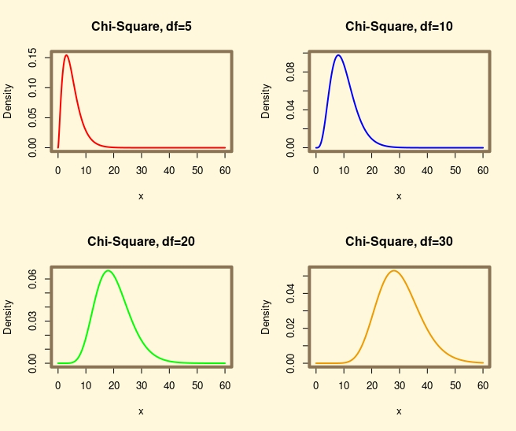
IMPORTANT NOTE: The settings made with the par() function permanently change the graphics settings. For this reason, it is necessary to reset the graphics settings after each use. For this, the dev.off() command can be used.